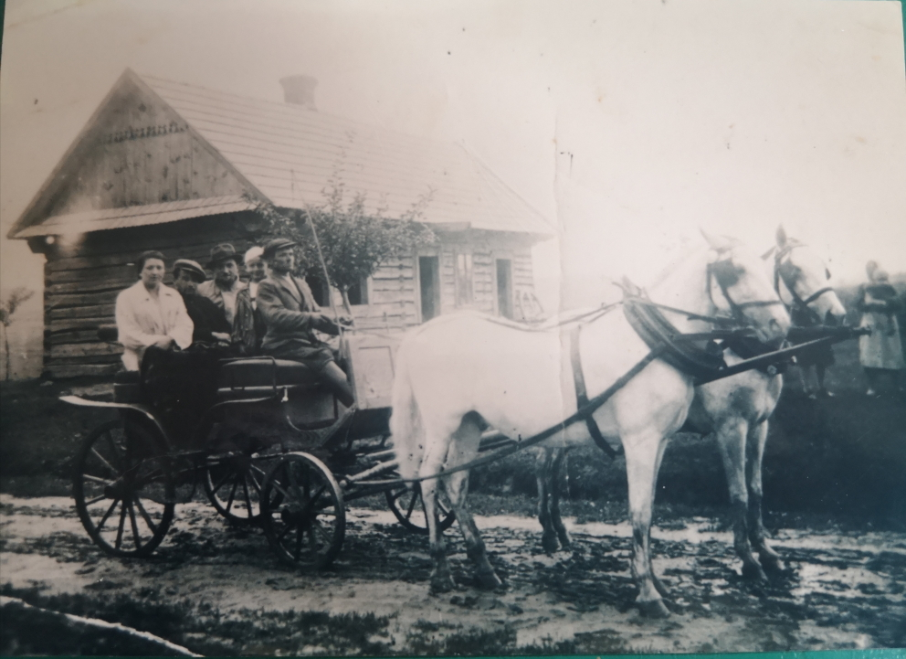
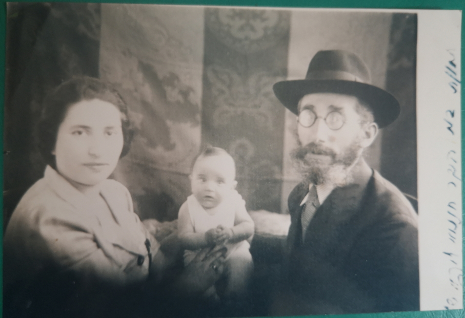
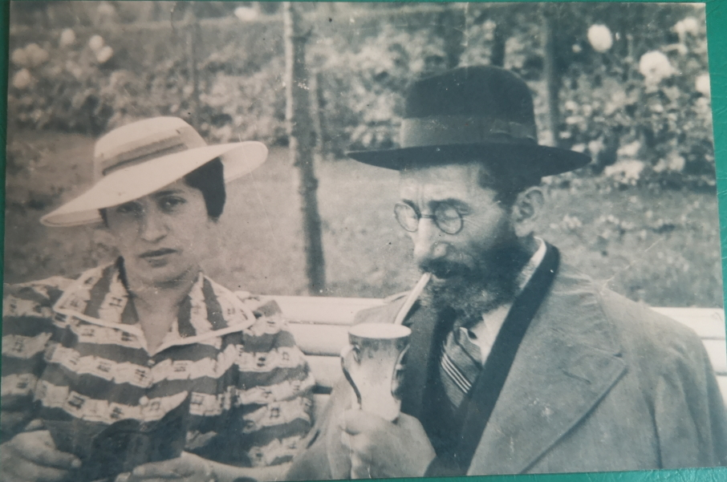
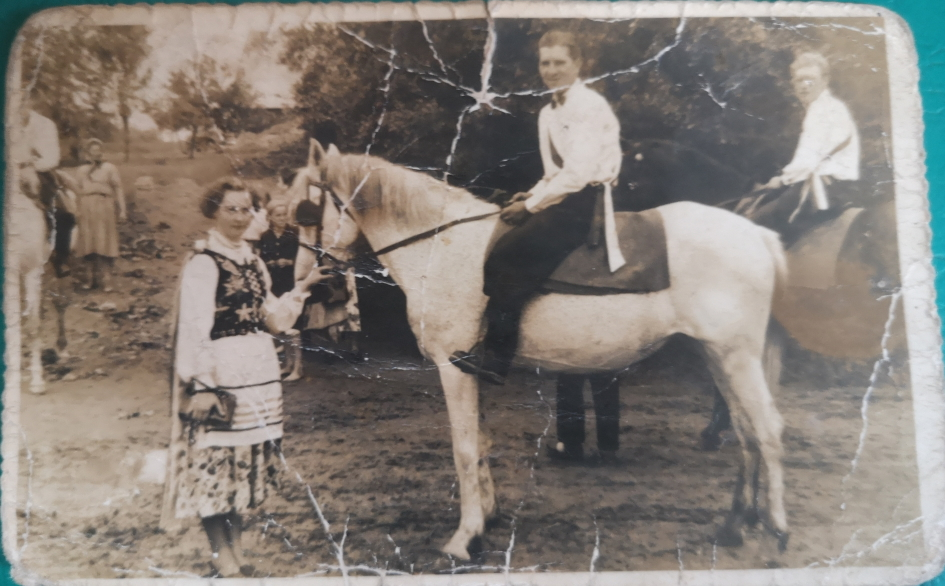
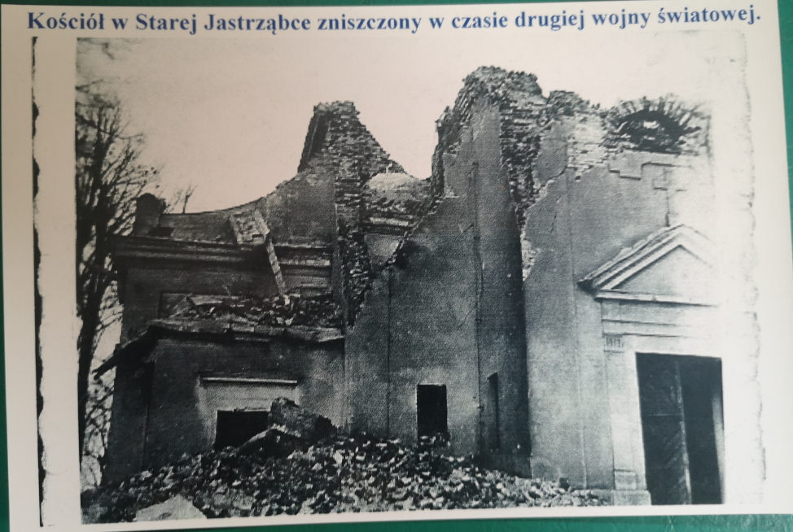

Stara Jastrząbka zdjęcia lata 1930-40
Zdjęcia i tekst przesłała Paulina Hajec. Materiały pochodzą od
Teresy Kapłańskiej ze Starej Jastrząbki, ciotki Pauliny Hajec.

Państwo w kolasce, czyli w tradycyjnym zaprzęgu konnym.
W tle dworskie "czworoki", czyli budynek mieszakalny, który miał cztery izby i mieszkały w nim cztery
rodziny. Przeznaczony zazwyczaj dla służby folwarcznej lub robotników rolnych. Stara Jastrząbka, rok ok.
1930.


Chaim Wainberger, ostatni dziedzic Starej Jastrząbki, jego żona Debora oraz ich syn. Stara
Jastrząbka, rok ok. 1930
Na przełomie lat 90/2000 był w Jastrząbce potomek właścicieli dworu. W czasie wojny był dzieckiem.
Ojciec nie przeżył wojny. Ukrywali się w okolicach Lwowa "Złotowa".
To on przywiózł kopię zdjęć, z których żyjący jeszcze mieszkańcy rozpoznali ojca dziedzica. Mieli oni
jeszcze majątki w Radomyślu Wielkim (noclegownie, hotel). Teraz jest tam szkoła i muzeum żydowskie.
Według opowieści matka dziedziczki (Debory) kupiła dwór (tylko nie wiadomo od kogo) za "garniec złotych
monet". Potem podzieliła majątek po połowie swoim dzieciom. Jednemu dała dużo gruntów rolnych i mniej
lasów, drugiemu odwrotnie - dużo lasów, mniej gruntów rolnych.
Ostatni dziedzic był dwa razy żonaty. Z pierwszą żoną nie miał dzieci, z drugą miał syna, który
ocalał i przybył zobaczyć Starą Jastrząbkę. Mieszka w Izraelu.
W czasie okupacji dworem administrował Lebiedzinski.
Źródło : Przeszłość wsi powiatu Ropczyckiego w ustach ich mieszkańców. Mgr Eugeniusz Hnatyk.
Schematyczne dane o powiecie Ropczyckim w dobie obecnej. Ropczyce 1936 nakładem Koło T. S. Z w
Ropczycach

Panna w tradycyjnym stroju ludowym. Kawalerzy na koniach. Stara Jastrząbka, rok ok. 1930.

Kościół w Starej Jastrząbce zniszczony w czasie II Wojny Światowej. Stara Jastrząbka, rok 1944